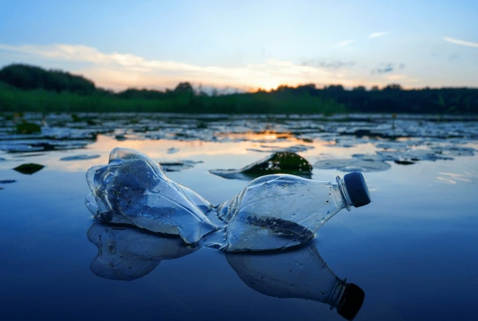

La contaminación hídrica o la contaminación del agua es una modificación de esta, que la vuelve impropia o peligrosa para el consumo, la industria, la agricultura, la pesca y las actividades, así como para los humanos y animales. Aunque puede ser natural, proviene en su mayoría de actividades humanas, como la liberación de residuos y contaminantes en ríos, lagos y mares. Esta se da por derrames de aguas residuales, eutrofización, desechos plásticos que se acumulan en los océanos y costas, acidificación de los océanos por CO2, y derrames de petróleo en mar abierto.
- Consume menos agua:
En realidad, hay una cantidad limitada de agua limpia y fresca disponible en la tierra. Invertí en dispositivos de ahorro de agua en lavabos, inodoros y duchas.
- Consume menos plástico:
Es muy difícil descomponer el plástico una vez que se ha producido. Gran parte del plástico que usamos termina en el suministro de agua del mundo, donde es aún más difícil desecharlo de manera segura. Por lo tanto, compra menos productos envasados en plástico y reduce su consumo.
- Reutiliza artículos
Cada vez que compres algo que no sea reciclable, como el plástico, reutilízalo tantas veces como sea posible. Si lo haces, disminuye su consumo, lo que significa que menos cantidad de estos productos terminarán en los suministros de agua del mundo.